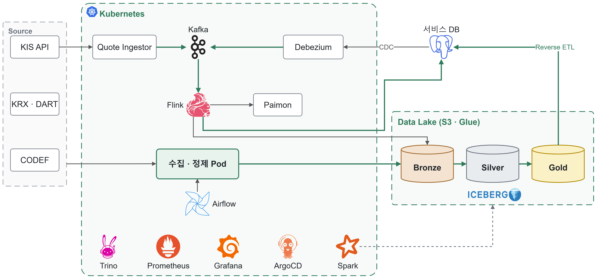

주식 · 계좌 데이터 통합 플랫폼 구축
Stock Project · 3인 사이드 프로젝트, 데이터 · 인프라 담당

1.배경 및 목표
- 여러 증권사 계좌의 잔고 · 체결 · 배당과 국내 · 미국 시세를 한곳에서 보는 투자 관리 앱을 3인이 개발 (앱 · 백엔드 1명, 데이터 · 인프라 2명)
- 앱이 쓰는 시세 · 기준정보 · 계좌 데이터를 배치와 실시간 두 경로로 공급하는 데이터 플랫폼을 설계 · 구축 · 운영
2.기술 스택 및 환경
- Python, Airflow, Kubernetes(kubeadm), ArgoCD, Kafka(Strimzi), Debezium, Flink, Paimon, Spark, Trino, Iceberg, Prometheus, Grafana, AWS(EC2, S3, Glue, ECR, SSM, EventBridge), GitHub Actions
- EC2 t3a.xlarge 3대, 외부 인바운드 포트 0개(SSM 터널 접속), EventBridge로 가동 시간대에만 노드 기동
- Glue 카탈로그 Iceberg 테이블 55개(Bronze 31 · Silver 22 · Gold 2), 파이프라인 단위 테스트 363개
3.주요 업무 및 상세 역할
- Kubernetes 클러스터 · Airflow 구축, ArgoCD로 Kafka · Flink · Spark · Trino 운영 구성
- Iceberg 카탈로그를 AWS Glue로 통합하고, Trino에서 레이크와 서비스 DB를 함께 조회하도록 연결
- Debezium CDC를 Flink로 받아 Iceberg Bronze와 Paimon 실시간 테이블에 적재하는 경로 구축
- Spark를 Kubernetes 네이티브로 전환하고 Iceberg 유지보수 잡(Compaction · Snapshot 만료 · Orphan 정리) 개발
- Prometheus · Grafana 대시보드 4종과 데이터 SLO · DB · 플랫폼 알림 규칙 14개 구성
- 시세 · 계좌 수집기와 Silver · Gold 정제 개발, GitHub Actions OIDC 기반 이미지 배포 구성
4.기술적 성과
- 만료 Snapshot 3,660개 · 1.1GB와 실제 대비 8배 부푼 테이블(94.6MB → 784.6MB)을 찾아 주 1회 Spark 잡으로 자동 정리
- Bronze Compaction은 7일 지난 파일만 적재 시각 순으로 합치게 해, 증분 처리의 파일 Pruning이 깨지지 않도록 설계
- 청크 단위 다중 커밋을 테이블당 단일 커밋으로 바꿔 수급 정제 15분 이상 → 38초, 레이크 커밋 약 65회 → 13회로 단축
- 멈춘 CDC 슬롯이 WAL 6.9GB를 붙잡아 볼륨 80%까지 찬 문제를 Heartbeat 커넥터로 재구성해 176MB로 회복
- OIDC 역할을 main 브랜치 · 단일 ECR로 제한하고, 계좌 자격증명은 SSM에서만 읽고 계좌번호는 마스킹